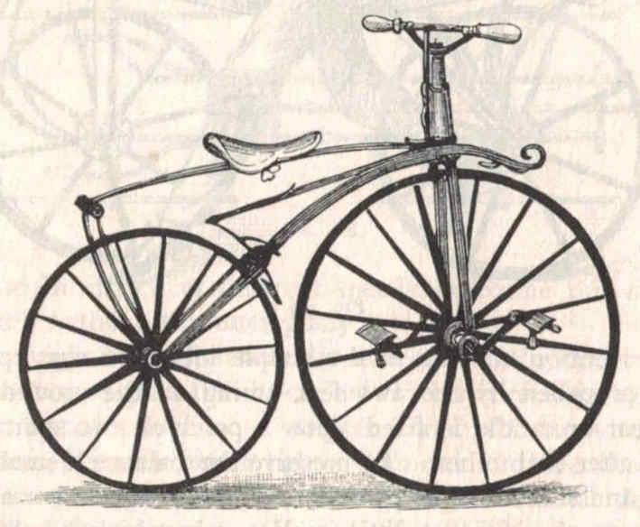
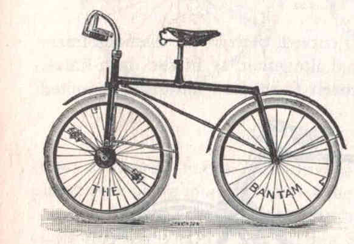
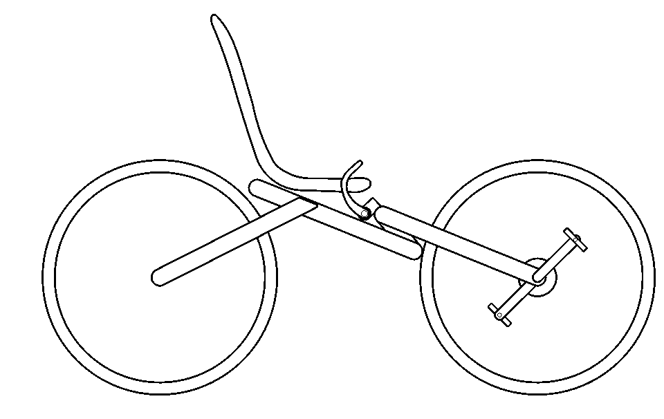
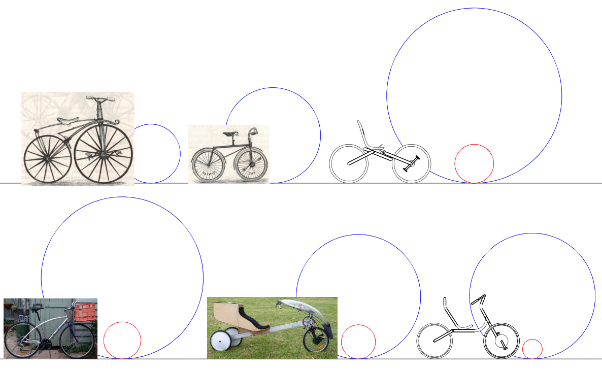
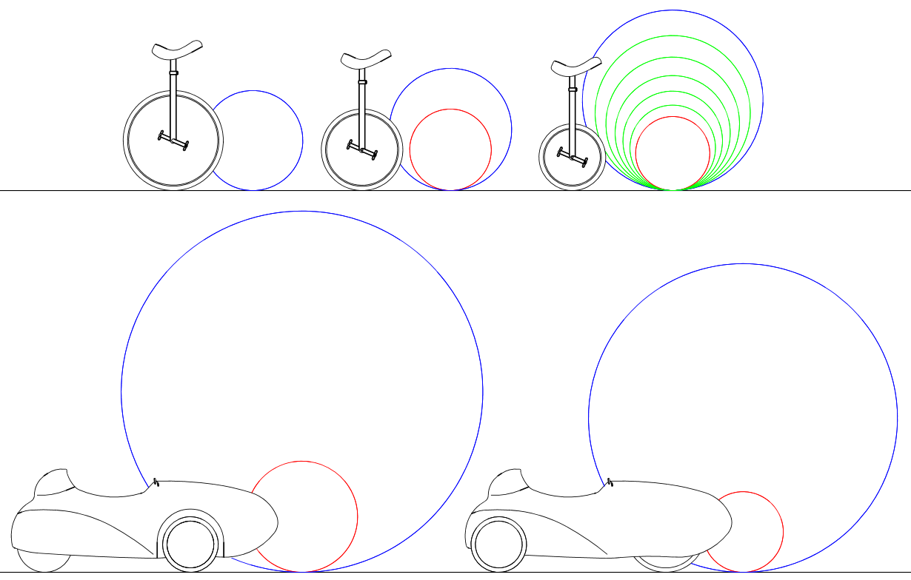

Contents | About | Contact
article 29, issue 13
Prospects for in-hub gearbox front wheel drive cycles
Stephen Nurse
January 21, 2021
Editor's note
In this article Stephen Nurse presents an update of his article 26 in issue 11 including his customary clear drawings, such as his use of circles to visualize the gear development of various hubcycles and unicycles (figs. 5 and 6 below). Download the complete article PDF (2 MB)
Front wheel drive cycles have existed since the Michaux bicycles of the 1860s, and gearboxes for their front hubs were developed before 1900. Since then, cycle transmission has been dominated by chain driven, rear wheel drive bicycles. But since 2000 hub gearbox cycles are being revived by keen inventors using advancing technology. This paper shows the uses, current developments and potential of front hub gearbox cycles (hubcycles), emphasises the technology with diagrams and speculates on an electrical hub.
 |
 |
 |
Gearboxes for hubs of these cycles started with the 1890s Bantam safety cycles and their fixed 2.75 ratio gearbox. Although there were hubcycle patents in the 1980s, wide gear range hubcycles became more widely publicised in articles by Thomas Kretschmer, and John Stegmann.
|
 |
|
Figure 5: Maximum or only gear (blue), minimum gear (red) for Michaux Bike, Bantam bike, Planned Kretschmer bike, Derailleur geared bicycle, Leaning trike, and Kervelo Pinion bike. Click for full resolution. PDF |
|
 |
|
Figure 6: Unicycles showing all gears: 36" standard, 29" with Schlumpf gearbox, 24" hubcycle uni with gearing based on Kervelo Kernel 7 hub, Velomobiles: Sinner Mango with min (red) and max (blue) gear sizes, Example hubcycle velomobile based on Sinner Mango, 29" drive wheel and Velotegra planetary gearbox. Click for full resolution. PDF |
Download the complete article PDF
(2 MB)